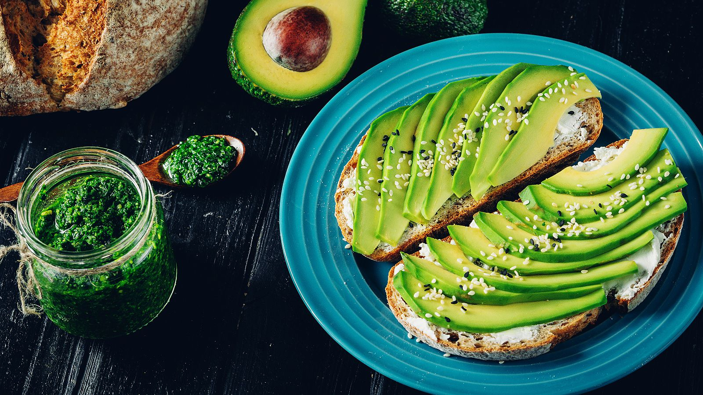
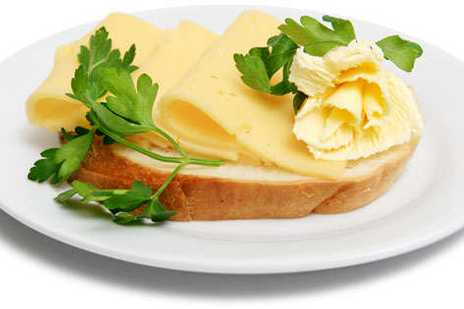

Завтраки без яиц и готовых продуктов

Тост с авокадо
Ингредиенты: 1 ломтик хлеба, 1/2 авокадо, соль, перец, лимонный сок.
Намазать авокадо на хрустящий тост.

Бутерброд с сыром и овощами
Ингредиенты: Хлеб, сыр, овощи.
Простой холодный бутерброд или слегка поджаренный.

Фруктовый смузи
Ингредиенты: Банан, ягоды, молоко.
Смешайте все в блендере и подавайте охлажденным.